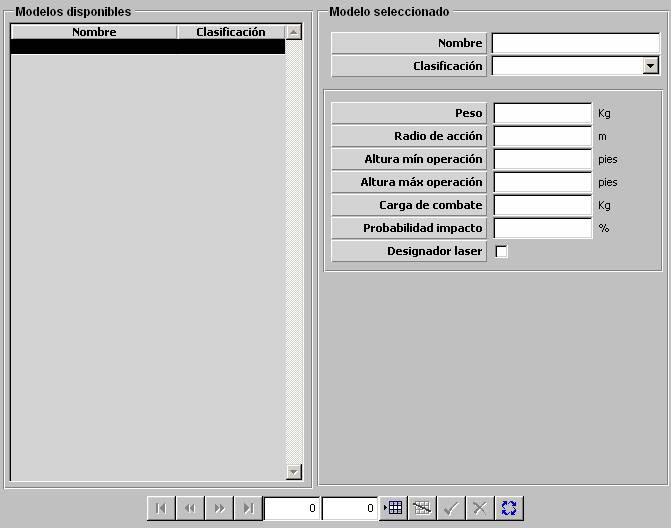

Bomba

Descripción de los parámetros:
Peso: Este parámetro es tenido en cuenta para el cálculo del peso transportado por las unidades aéreas que lleven este tipo de bombas.
Unidades: kilogramos
Rango: 0 – 99999
Radio de Acción: Este parámetro determina el radio de la esfera de acción de la bomba al hacer explosión. Es tenido en cuenta junto con la cantidad de bombas lanzadas para obtener un radio de acción total del impacto del lanzamiento.
Unidades: metros
Rango: 0 – 99999
Altura Mínima de Operación: Este parámetro determina la mínima altura de la unidad aérea a la que puede llevar a cabo un lanzamiento de bombas de este tipo.
Unidades: pies
Rango: 0 – 99999
Altura Máxima de Operación: Este parámetro determina la máxima altura de la unidad aérea a la que puede llevar a cabo un lanzamiento de bombas de este tipo.
Unidades: pies
Rango: 0 – 99999
Carga de Combate: Este parámetro determina la carga explosiva de la bomba. Es tenido en cuenta para la evaluación de los daños producidos por el impacto de esta bomba en una unidad.
Unidades: kilogramos
Rango: 0 – 99999
Probabilidad de Impacto: Este parámetro es tenido en cuenta junto con la cantidad de bombas lanzadas para decidir si una vez que se producen las condiciones de impacto de la bomba sobre una unidad, se produce efectivamente impacto o no.
Unidades: %
Rango: 0 – 100
Ejemplo:
Una vez que se producen las condiciones de impacto:
Si Prob. de Impacto = 100, N bombas lanzadas Þ Impacta siempre.
Si Prob. de Impacto = 50, 1 bomba lanzada Þ Impacta @ 50% veces.
Si Prob. de Impacto = 50, 4 bombas lanzadas Þ Impacta @ 75% veces.
Si Prob. de Impacto = 0, N bombas lanzadas Þ No impacta nunca.
Designador Láser: Este parámetro determina si la bomba tiene capacidad de ser lanzada con designador láser. Si se establece esta capacidad el operador podrá seleccionar en el momento del lanzamiento a la unidad designadora y asignar un blanco de entre los contactos de esta unidad.